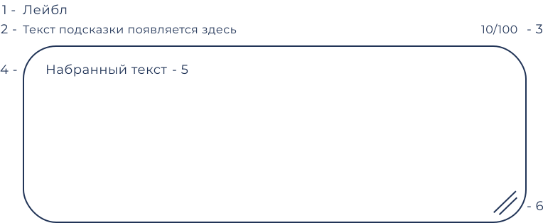

@@include('./blocks/nav.html')
Назначение
Текстовые поля позволяют пользователям вводить текст в интерфейс. Компонент текстового поля должен обеспечивать четкую возможность взаимодействия, делая поля обнаруживаемыми в приложении, эффективными для заполнения и доступными.
Строение компонента
Текстовые поля позволяют пользователям вводить текст в интерфейс. Компонент текстового поля должен обеспечивать четкую возможность взаимодействия, делая поля обнаруживаемыми в приложении, эффективными для заполнения и доступными.
| Номер элемента | Значение |
|---|---|
| 1 | Лейбл. Используется для описания поля |
| 2 | Вспомогательное описание. Описание должно начинается с глагола. Не используйте вспомогательное описание, если информации в плейсхолдере достаточно для заполнения поля и ее не требуется отображать при вводе. |
| 3 | Счетчик. Показывает количество введенных пользователем символов и максимальное количество, которое допустимо для ввода в это поле. |
| 4 | Плейсхолдер. Текстовый контент, заполняющий временно пустое поле, с целью привлечения внимания пользователя к данному элементу. |
| 5 | Поле ввода |
| 5 | Нативная кнопка масштабирования. Браузерный нативный элемент, позволяющий пользователю масштабировать размер поля ввода. |